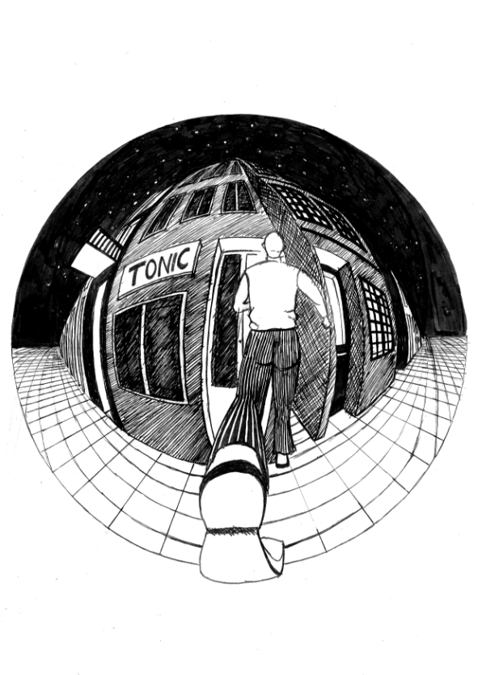

Os Contos do Gin-Tonic de Mário Henrique-Leiria trata-se de um livro com conteúdo surreal. O objetivo desta proposta foi fazer ilustrações para certas partes do livro, como a capa; as guardas, para um conto à escolha. Ao ler os contos percebi uma presença forte de deformação da realidade. E o meu objetivo era passar essa sensação para o observador. Uma boa forma de deformar o real é a perspetiva curvilinea. Outro conceito a ter em conta é a aproximação/ separação. Há momentos em que estes contos parecem reais e outros em que vão além. Ao fazer as ilustrações tive atenção ao que disse em cima e o resultado fala por si.
